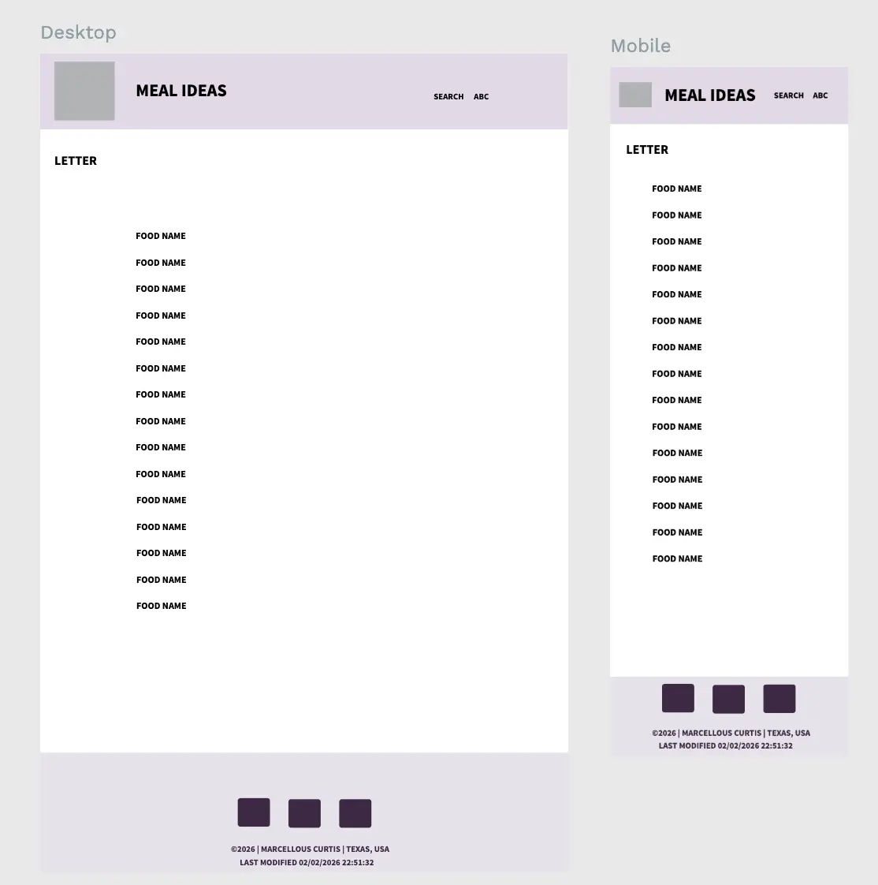
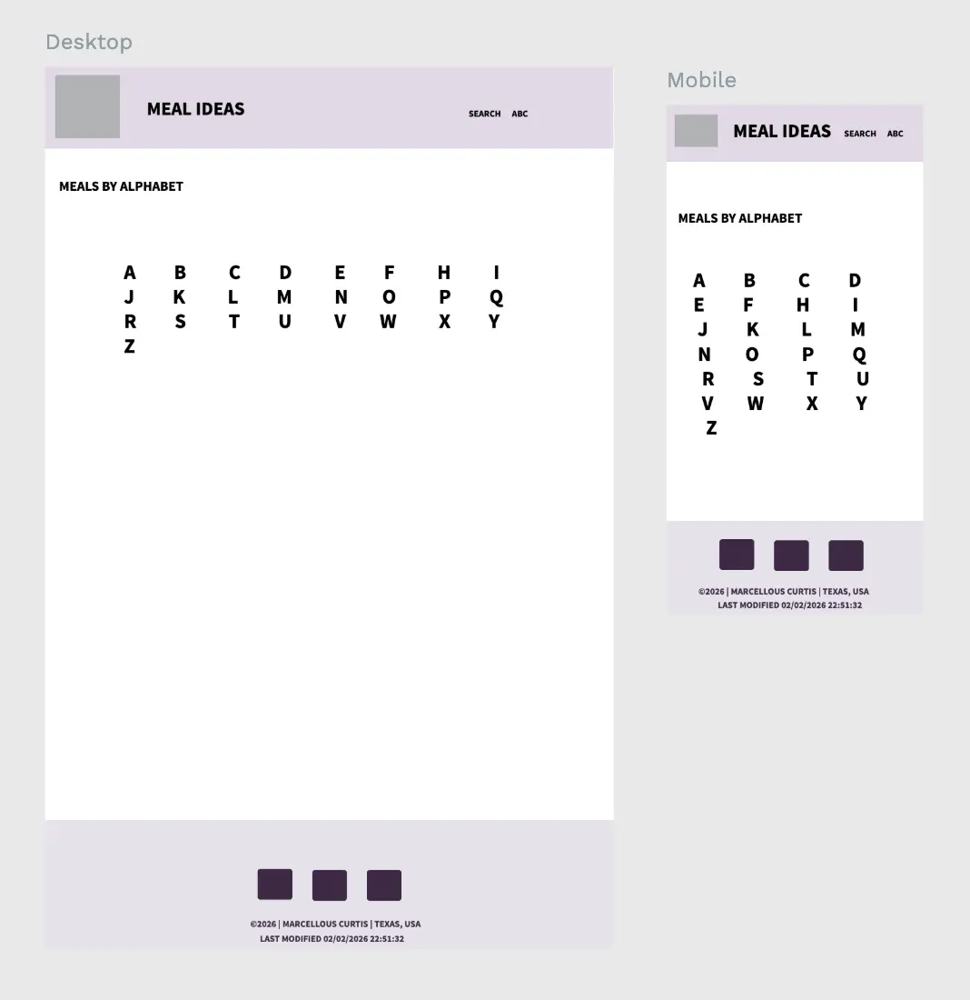
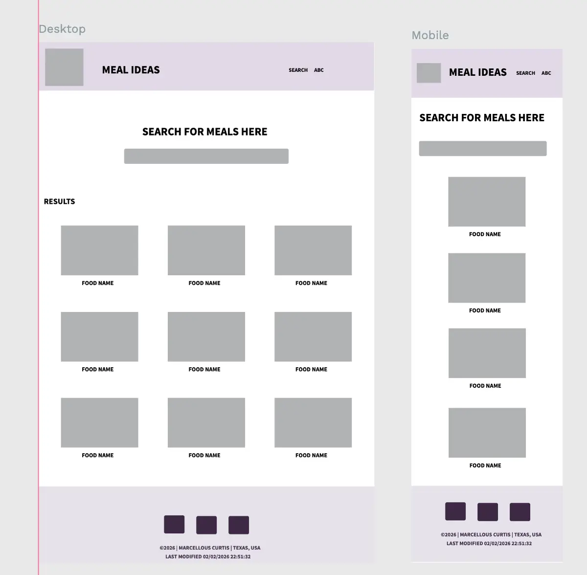

Meal Ideas Site Plan
Site Name:
The site or domain name is the primary identifier and is critical for branding, visibility, and recognition, often coupled with a logo or logo version. A representative domain that is available to purchase would be normally important but not required in this class. Provide a valid site name that is relevant to your project and a short reason why the the site name was selected.
Example: Bay Area eBiking Club • This name represents a club that is focused on electric biking in the San Francisco Bay Area. Optional domain availability: bay-ebike.org
- meal-ideas.com
Site Purpose:
The site purpose should attempt to provide scope to the website content in describing what services and information will be provided.
Example: for the Bay Area eBiking Club • The site provides a hub for regional e-biking by listing providing trail and e-bike recommendation information along with a membership information form.
- The purpose of Meal Ideas is for someone to find popular meal ideas they can use to make a meal with. They will find the most popular, a list of top favorites, and have the ability to search meal ideas they have interest in.
Scenarios:
Scenarios are questions that are asked by a site visitor who represents the target audience of the organization or company. The questions will help you drive the content of the website as it provides answers to the questions. Again, much of the content specifications will actually be provided but start thinking about the target audience of the site. Include at least two scenarios.
Example: for the Bay Area eBiking Club • What is the best e-bike to get for mountainous areas? • Where can I find contact information for the club's directors?
- What should I make for dinner this week?
- What ingredients do I need to make a Chicken Roast?
- What are some popluar home cooked meals?
Color Scheme:
The color scheme refers to the carefully selected site colors. Define at least two colors and show where each color selected will be used, such as headings, paragraphs, background colors, accents, and so on. ! Use your selected color scheme on this HTML document exclusively. How to Choose Good Website Color Schemes – websitebuilderexpert.com
- Primary color: #a307ec
- Secondary color: #31546f
- Supporting color: #3c2944
Typography:
The typography section of the planning document provides examples of the fonts to be used and where they are to be applied. No less than one font and no more than three fonts selections need to be selected. Indicate where each selected font will be used (such as headings, body, and so on). Other fonts can be used for special circumstances or sections as needed. Choosing Web Fonts Beginners Guide – Google Design
- Header Font - "Indie Flower", cursive
- Body Font - "Playpen Sans", cursive
Wireframe:
Design a wireframe of your project's home page layout. Wireframe diagrams can be simple and do not need to have actual content, just representations of content and their layout relationship. Provide a sketch for the mobile view and for a larger viewport (desktop/tablet) view for the home page. What is a Wireframe? – evolve Remember that in an earlier course you worked with a given wireframe. Country/Place Page
- Link To Wire Frame


